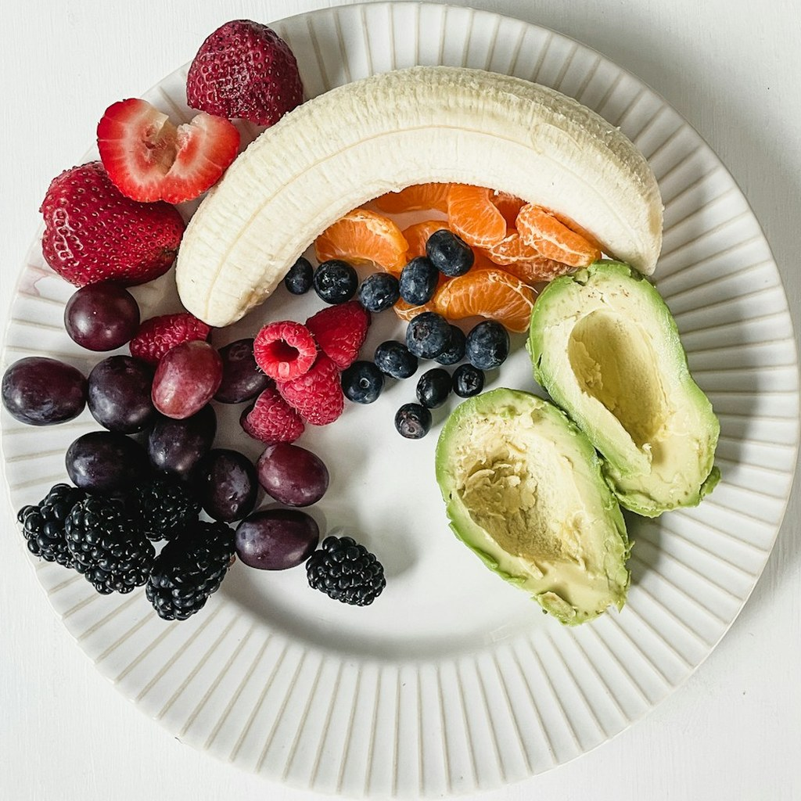

Prato de frutas
Frutas frescas da estação, com banana, abacate e frutas vermelhas.

Ver na minha mesa Ver na minha mesaAbra esta página no celular para ver o prato na sua mesa.
Frutas frescas da estação, com banana, abacate e frutas vermelhas.

Ver na minha mesa Ver na minha mesaAbra esta página no celular para ver o prato na sua mesa.